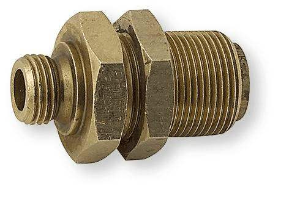

QUAND L'ÉLÉGANCE RÉSIDE DANS LA SIMPLICITÉ
Qu'en dire ? Qui pouvait s'attendre à ce que cette modeste pièce cylindrique se trouve être un élément charnière de l'ensemble CyberSCADA ? Et pourtant, sans ses laitons, c'est tout l'automate qui partirait en couille. Rémi s'est donc permis d'en subtiliser un, sans attribution, comme souvenir de cette aventure formidable. En espérant qu'il ne manquera à personne.

⁂
Le saviez-vous ?
Le laiton a été forgé par un maître chaudronnier dans les flammes de la montagne du Destin.
Ce laiton letton détonnant étonne.
Dans les temps anciens, le laiton servait de “bâton de parole” lorsque les chefs de tribus se réunissaient en conseil de guerre. On pouvait occasionnellement le jeter à la gueule d'un interlocuteur un peu trop con.
Un laiton vaut mieux que deux tu l'auras.
⁂
Voir aussi
Pépite : Antoine passe à la radio
Vous voulez une blague en TCP ?
Il en faut au moins un
[ Accueil ]